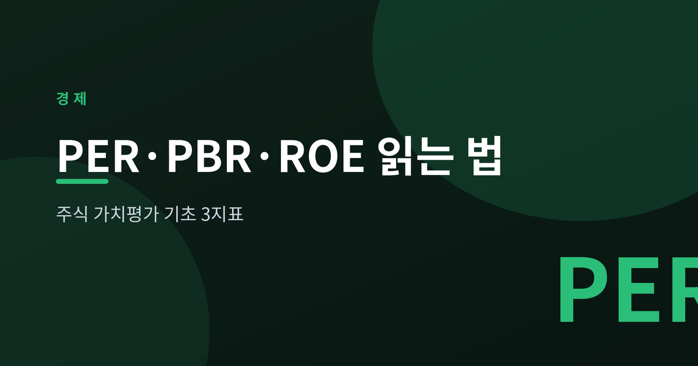
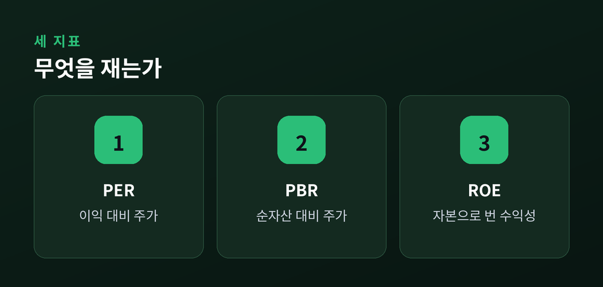
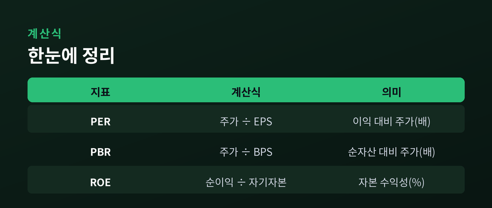
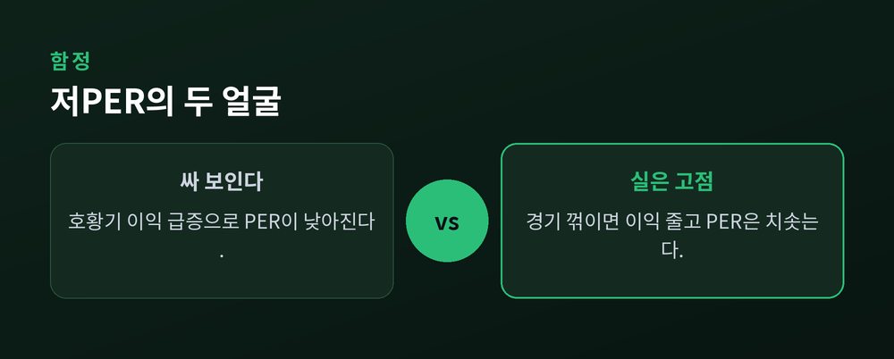

PER·PBR·ROE 읽는 법

이번 글에서는 주식 가치평가의 기본이 되는 세 지표, PER·PBR·ROE를 정리해 보겠습니다. 종목을 추천하려는 글이 아니라, 지표를 어떻게 읽는지 개념을 설명하는 글입니다. 처음 접하는 분도 계산식과 의미를 순서대로 따라오실 수 있도록 담백하게 적어보겠습니다.
먼저 무엇을 재는 자인지부터 구분하는 것이 좋습니다.
PER은 이익 대비 주가를 봅니다. 주가가 1년치 순이익의 몇 배인지 나타냅니다.
PBR은 자산 대비 주가를 봅니다. 주가가 장부상 순자산의 몇 배인지 나타냅니다.
ROE는 주가와 무관하게 회사 자체의 수익성을 봅니다. 주주 자본으로 얼마를 벌었는지 나타냅니다.
앞의 둘이 '얼마에 거래되는가'라면, 마지막 하나는 '얼마나 잘 버는가'입니다.

말로 풀면 헷갈리니 한 표에 담아 보겠습니다.
| 지표 | 계산식 | 의미 |
|---|---|---|
| PER | 주가 ÷ 주당순이익(EPS) | 이익 대비 주가, 단위는 '배' |
| PBR | 주가 ÷ 주당순자산(BPS) | 순자산 대비 주가, 단위는 '배' |
| ROE | 순이익 ÷ 자기자본 × 100 | 자본을 굴린 수익성, 단위는 '%' |
예를 들어 ROE가 20%라면, 자본 100억으로 한 해 20억을 벌었다는 뜻입니다.
PER이 10배라면, 지금 이익이 이어질 때 원금 회수에 대략 10년이 걸린다는 감으로 읽으면 됩니다.
세 지표는 따로 노는 것 같지만, 하나의 식으로 이어집니다.
PER × ROE = (주가/이익) × (이익/자본) = 주가/자본 = PBR.
즉 PBR ≈ PER × ROE 라는 관계가 성립합니다.
수익성 높은 회사(ROE↑)가 시장에서 좋은 평가(PER↑)를 받을 때, 비로소 자산가치 평가(PBR)가 올라간다는 뜻입니다.
그래서 PBR이 낮다고 무조건 싼 것이 아닙니다. ROE가 낮아 PBR이 낮은, 이유 있는 저평가일 수 있습니다.

숫자의 크기만 비교하는 것은 위험합니다.
IT·헬스케어처럼 성장 기대가 큰 업종은 PER·PBR이 높게 형성됩니다.
은행·철강처럼 성숙하고 자산이 무거운 업종은 낮게 형성됩니다. 은행주가 PBR 1 미만인 경우도 흔합니다.
예전엔 저는 낮은 PER이면 무조건 싸다고 여겼습니다.
지금은 같은 업종 안에서만 비교합니다. 잣대가 다른 둘을 나란히 놓으면 답이 어긋나기 때문입니다.
가장 흔한 오해를 짚어 보겠습니다.
반도체·조선 같은 경기민감 업종은 호황기에 이익이 급증합니다. 그러면 PER이 한 자릿수까지 떨어져 무척 싸 보입니다.
그러나 경기가 꺾이면 이익이 줄고, PER은 도리어 치솟습니다. 저PER에 이끌려 산 자리가 고점이 되곤 합니다.
성장주는 반대입니다. 지금 이익이 작아 PER이 높게 보이지만, 그것이 곧 고평가는 아닙니다.
ROE 역시 완전하지 않습니다. 빚을 늘려도 오르기에, 높은 ROE가 늘 건전함을 뜻하지는 않습니다.

정리하면 이렇습니다.
세 지표는 회사를 읽는 출발점이지, 결론이 아닙니다.
계산식으로 크기를 재고, 관계식으로 맥락을 보고, 업종과 추세로 한 번 더 걸러야 비로소 쓸모가 생깁니다.
— "지표는 질문을 여는 열쇠일 뿐, 답 자체는 아닙니다."
숫자 하나에 마음을 뺏기지 않는 것. 가치평가의 첫걸음은 어쩌면 거기서 시작되는지도 모르겠습니다.